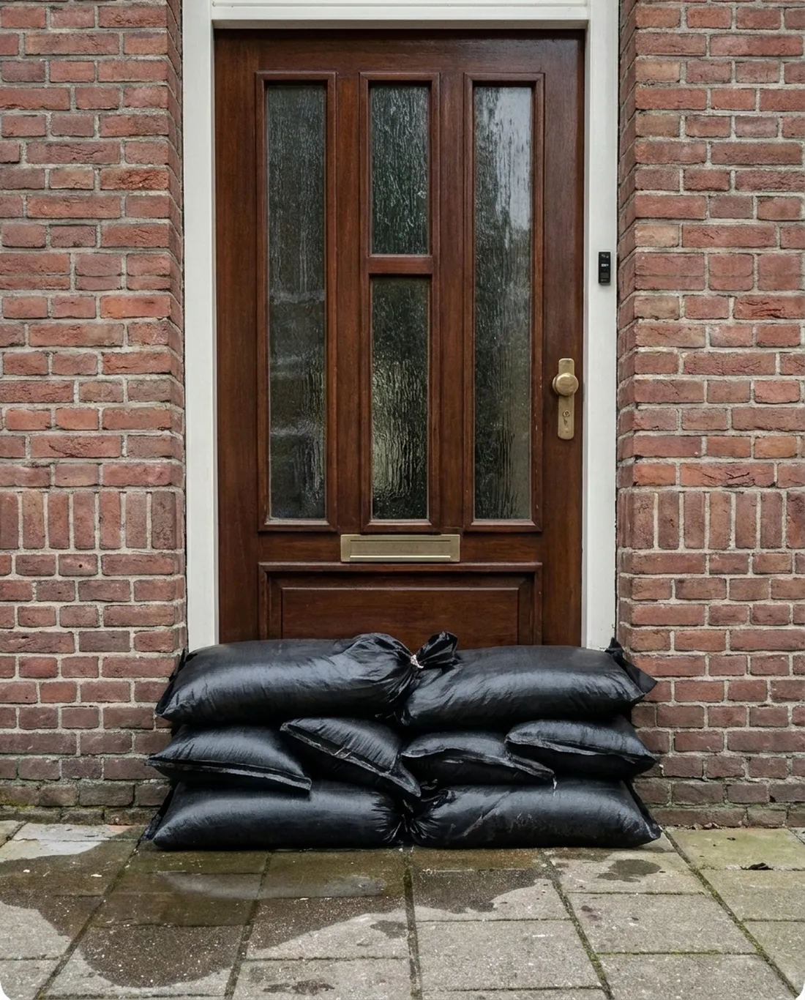
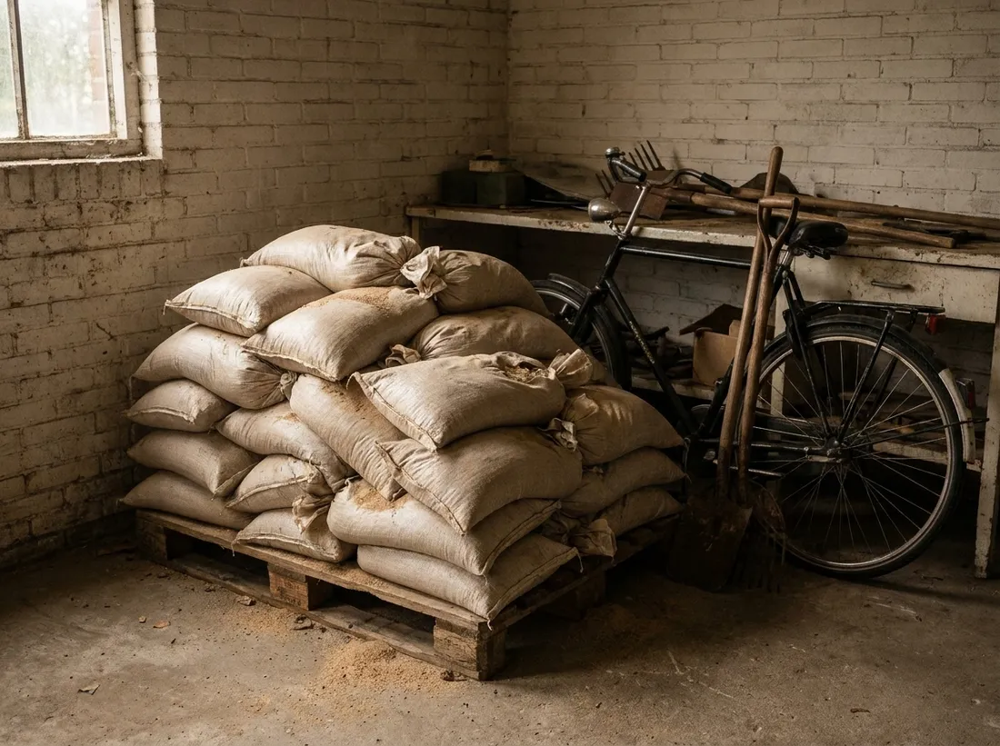
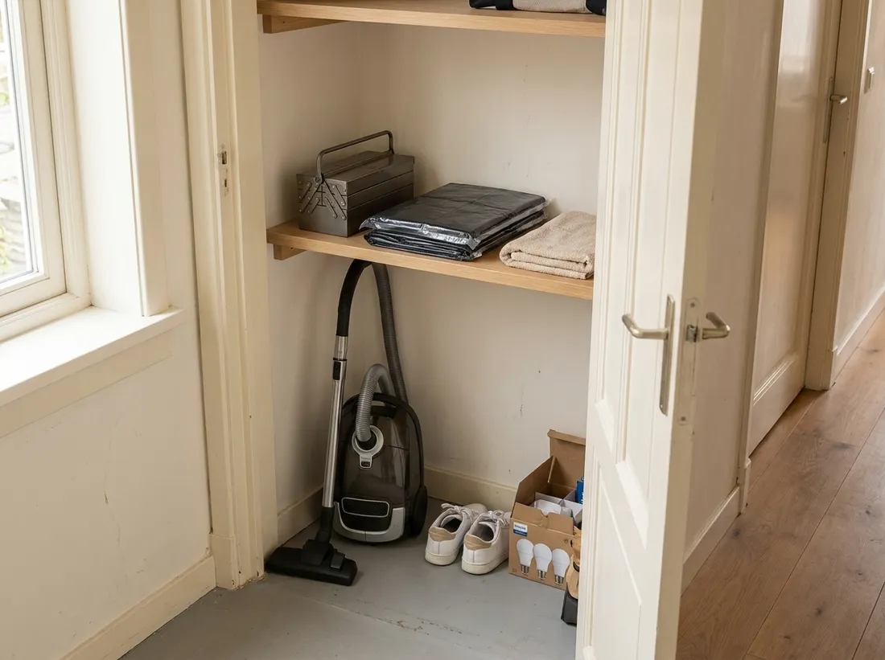
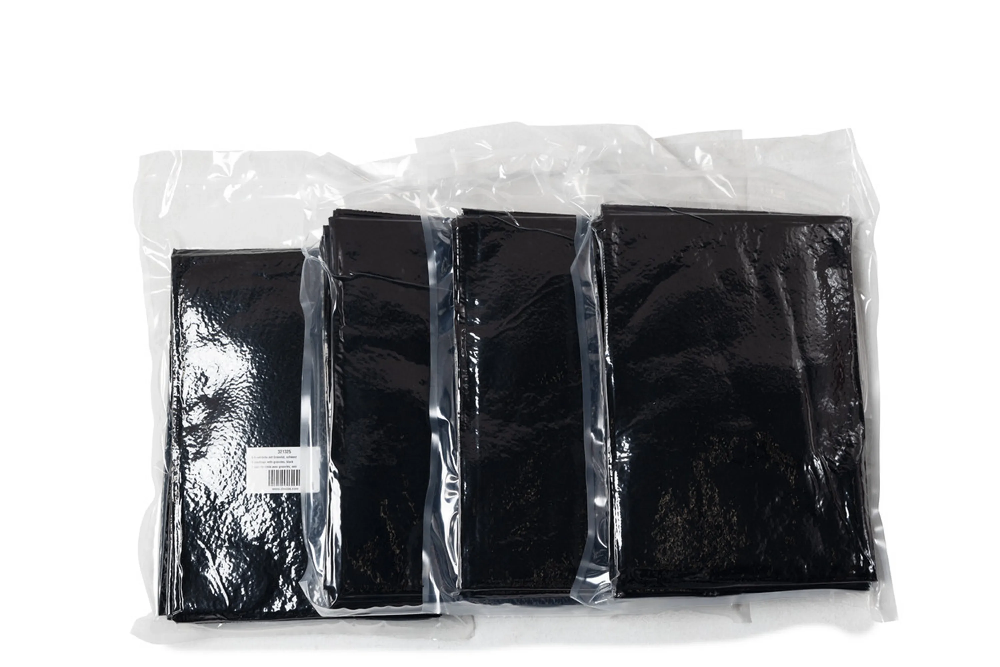

Hoe hoog komt het water bij jouw voordeur?
Vul je adres in. Je ziet hoe hoog regenwater bij een wolkbreuk tegen je gebouw komt, en hoeveel zakken je nodig hebt.
- Gratis
- Zonder account
- Je adres wordt niet opgeslagen

!Voorbeeld: Polderweg 12 · tot 15 cm water
Tot – water
Kies een bui
Bekijk mijn zakkenadviesBerekend met de Klimaateffectatlas (2026): waterdiepte bij hevige neerslag (70 en 90 mm in een uur) en de FCAB-omgevingsscore wateroverlast. Het gaat om regenwater dat op straat blijft staan, niet om rivieren, meren of zee (kijk daarvoor op overstroomik.nl). Nu alleen voor Utrecht en directe omgeving. Geen garantie.
Je adres op de kaart
Gebouw: water tegen de gevel
Water op straat
De kaart volgt de bui die je hierboven kiest. Bron: Klimaateffectatlas, 2026 (CC BY 4.0).
Zoveel zakken heb je nodig
We rekenen met de waterhoogte tegen je gevel bij de gekozen bui. Pas de openingen aan zodat het klopt met jouw huis.
Waterhoogte
Schuif om met een andere waterhoogte te rekenen.
Openingen die je wilt afsluiten
Opening toevoegen
Twintig zandzakken passen niet in je gangkast. Deze wel.
Bescherming tegen water faalt zelden op het moment zelf. Het faalt maanden eerder, omdat niemand een pallet zand in huis wil hebben. Waterwal ligt plat op een plank tot je het nodig hebt.

20 zandzakken
- Ongeveer 300 kilo zand, het hele jaar in de weg
- Vullen kost tijd, een schep en een tweede paar handen
- Het zand moet er zijn vóór het water er is

20 Waterwal-zakken
- Eén plat vacuümpak, past op een plank of onder het bed
- Geen zand en geen schep: water doet het werk
- In 3 tot 4 minuten opgezwollen tot een dam
Van plank tot dam in drie stappen
-
1. Bewaar ze plat
De zakken zitten vacuüm verpakt en nemen bijna geen ruimte in. Leg ze in de gangkast, de schuur of de meterkast.
-
2. Leg ze neer en maak ze nat
Leg de zakken voor de deur en giet er water over, of laat het opkomende water het werk doen. Ze werken met zoet water: regen, kraan of rivier.
-
3. Na 3 tot 4 minuten een dam
De korrels in de zak nemen het water op en zwellen op. Stapel de zakken in verband, zoals bakstenen, en het water blijft buiten.


Twee uitvoeringen, één prijs
€ 10 per zak
Beide zakken zijn gevuld met dezelfde waterabsorberende korrels. Het verschil zit in de handvatten.
Zwart, met handvatten. Een volgezogen zak is zwaar. Met de handvatten til en verleg je hem makkelijker, en zwart valt minder op voor de deur.
Wit, zonder handvatten. Dezelfde zak, prima als je hem droog neerlegt op de plek waar hij moet blijven liggen.
- Buitenkant
- Niet-geweven stof
- Vulling
- Superabsorberend polymeer (natriumpolyacrylaat)
- Zweltijd
- 3 tot 4 minuten in zoet water
- Veiligheid
- Stof en vulling zijn niet giftig
- Verpakking
- Vacuüm, plat op te bergen
- Gebruik
- Eenmalig
Eerlijke antwoorden
Houden de zakken al het water tegen?
Nee, en dat doet geen enkele zak. Ze keren en vertragen het water, net als zandzakken. Er kan altijd een beetje langs of doorheen sijpelen. Het doel is dat het meeste water buiten blijft en dat jij tijd wint. Bij meer dan ongeveer een halve meter water houden zakken het niet meer tegen.
Werken ze ook met zout water?
Niet goed. De korrels zwellen op in zoet water. Woon je aan de kust en dreigt er zeewater, laat de zakken dan vooraf opzwellen met kraanwater.
Kan ik de zakken opnieuw gebruiken?
Nee. De zakken zijn voor eenmalig gebruik. Na een overstroming hebben ze ook opgenomen wat er in het water zat. Ongebruikte zakken bewaar je droog en in de verpakking.
Hoe betrouwbaar is de kaart?
Alles komt uit de Klimaateffectatlas: landelijke berekeningen van waar regenwater blijft staan bij een wolkbreuk van 70 mm en van 90 mm in een uur, op een raster van 50 bij 50 cm. Voor de bui van 70 mm gebruiken we de officiële FCAB-omgevingsscore per gebouw. Voor de bui van 90 mm bestaat die score niet; die rekenen we zelf op dezelfde manier uit (het diepste water vlak langs de gevel). Het zijn berekeningen: ze laten zien wat er kán gebeuren, niet wat er zeker gebeurt. Een drempel, kelderingang of verhoogde stoep zit er niet in.
Wat betekent het als mijn gebouw rood kleurt?
De kleur is de FCAB-klasse: hoe hoog het water bij die bui tegen je gevel komt. Wit is minder dan 2 cm, lichtroze 2 tot 10 cm, en vanaf 10 cm kleurt een gebouw rood, tot donkerrood bij meer dan 30 cm. Rood betekent dat het water bij een deur of kelderraam naar binnen kan lopen als de drempel laag is.
Mijn gebouw is wit. Heb ik dan niets nodig?
Bij deze buien blijft er volgens de berekening weinig water tegen je gevel staan. Dat zegt niets over rivieren, meren of zee; kijk daarvoor op overstroomik.nl. Staat er bij jou weleens water tegen de drempel na een zware bui, dan zijn een paar zakken in de kast een goedkope verzekering.
Wat doe ik met de zakken na gebruik?
De stof en de vulling zijn niet giftig. Laat de zakken uitlekken en volg de regels van je gemeente voor het afvoeren, zeker als het water vervuild was.
Wanneer kan ik bestellen en wat kost het?
We zijn nog niet open. De richtprijs is € 10 per zak, voor zowel zwart als wit. Zet je op de wachtlijst, dan mailen we je zodra de verkoop start.
Als eerste weten wanneer Waterwal te koop is?
We zijn nog niet open. Laat je e-mailadres achter en we mailen je zodra de verkoop start.
Je staat erop.
We mailen je zodra de verkoop start.